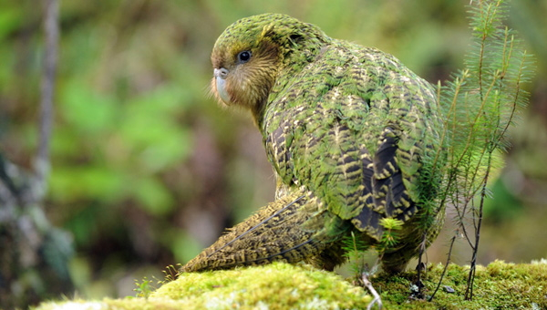

|
The animals of New Zealand have an unusual history. The islands were part of Gondwana, from which they separated 84 million years ago. New Zealand has some animals, birds and plants which survive from that time. At that time the country's only mammals were bats and seals and sea lions. Because of this, the country has an unusually large number of flightless birds. There are also about 60 species of lizard, 4 species of frog and 2 species of tuatara. |
 |